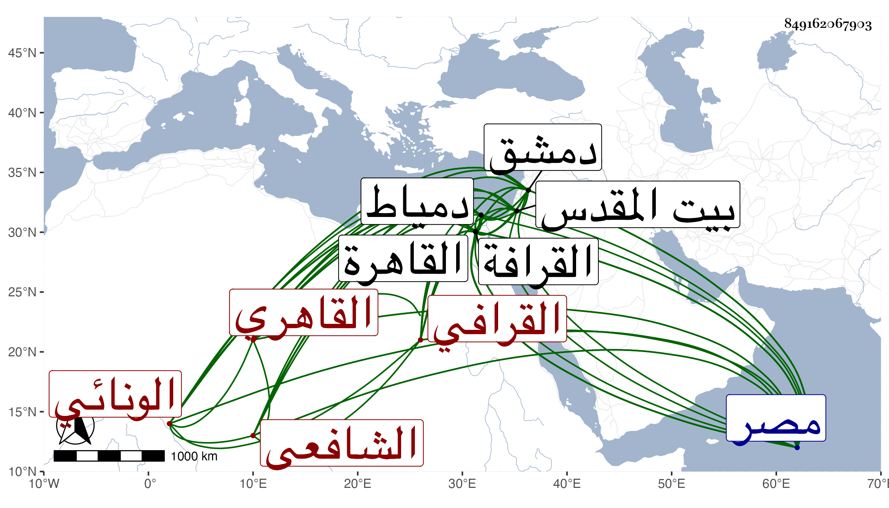

0902Sakhawi.DawLamic.ITO20230111-ara1.EIS1600.849162067903
Biography ID: 849162067903
341
محمد بن اسماعيل بن محمد بن أحمد بن يوسف الشمس الونائي بفتح الواو والنون وبالقصر نسبة لقرية بصعيد مصر الأدنى ثم القرافي القاهري الشافعي الآتي ولده البدر محمد ويعرف بالونائي . ولد في شعبان سنة ثمان وثمانين وسبعمائة في بساتين الوزير من ضواحي القاهرة بناحية القرافة عند خاله الفخر الونائي وحفظ القرآن والعمدة والتنبيه والشاطبية وجمع الجوامع وألفية ابن ملك والتلخيص والشمسية وغيرها ، وعرض على الأنباسي وابن الملقن والعراقي والكمال الدميري والتقي الزبيري وأجازوا له ، وبحث في علم القراءات على الشمس القليوبي شيخ خانقاة سرياقوس ، وعنه وعن الصدر السويفي والشمسين الزركشي والبرماوي أخذ الفقه واستدت عنايته بملازمة الأخير حتى أخذ عنه الكثير من الفقه وأصله والعربية وغيرها بل كان جل انتفاعه به وأخذ النحو أيضا عن السراج الدموشي والبدر الدماميني سمع عليه بحث الغنى والشمس العجيمي سبط ابن هشام وانتفع به فيها بل وفي كثير من الأصول والمعقولات والمنطق وعن القطب البعض من ابن الحاجب الأصلي ومن حاشيته على المطالع وحضر أيضا دروس النظام الصيرامي في فنون والجمال المارداني في أشياء ولازم العز بن جماعة طويلا حتى أخذ عنه غالب ما كان يقرأ عنده كالفقه والأصلين والمعاني والبيان والمنطق وكذا لما قدم العلاء البخاري القاهرة لم ينفك عنه بحيث أخذ عنه المختصر والحاشيتين وجملة ، ولما توجه لدمياط سافر إليه وقرأ على البساطي أشياء وأكثر من التردد لشيخنا والأستفادة منه حتى أنني رأيت بخطه وأروي الكتب الستة عن شيخنا قاضي القضاة حافظ العصر فلان ، بل سمع على الجلال البلقيني والولي العراقي وشيخه البرماوي وآخرين وجد حتى تقدم في الفنون وتنزل ببعض الجهات طالبا ثم مدرسا بالتنكزية بالقرافة بعد تكسبه بالشهادة كأبيه في حانوت بباب القرافة ولكنه أعرض عنها وتصدى للأشغال والإفادة مع التقلل من الدنيا والتقنع باليسير من التجارة وعدم الالتفات لما يشغله عن ذلك من الوظائف وغيرها والتقلل من صحبة الأعيان حتى صار أحد من يشار إليه بالعلم والعمل وانتفع به الأمائل واستتابه الشهاب بن المحمرة في تدريس الفقه بالشيخونية حين توجه للصلاحية في بيت المقدس ثم استقل به بعد موته وبعد بيسير خطبه الظاهر جقمق لسابق معرفة به من مجلس العلاء البخاري لقضاء دمشق فأجاب بعد شدة تمنعه واختفائه وكتب في توقيعه ما كان في توقيع البرهان بن جماعة وجهز بجميع ما يحتاج إليه من مركوب وملبوس وغيرهما ، وسافر في إحدى الجماديين سنة ثلاث وأربعين فسار فيه أحسن سيرة ولكنه صرف لشكوى نائبها منه عن قرب وتوجه للحج ثم رجع منه إلى القاهرة أول التي تليها ولم يلبث أن عين لقضاء مصر في ثاني صفرها فما تم بل عاد لدمشق على قضائها أيضا بعد تمنع وتعلل واشتراط منه لإعادة ما أخرج عن القاضي من الوظائف فأجيب ، وسافر في ذي القعدة منها فلزم طريقته في تحري العدل إلى أن قدم القاهرة في ذي الحجة سنة ست وأربعين وهو على قضائة ثم استعفى منه بعد يسير إلى أن استقر في تدريس الصلاحية المجاورة للشافعي في المحرم سنة ثمان وأربعين وتصدى من حين قدومه على عادته للإقراء فازدحم عليه الأعيان وأقرأ في الروضة من موضعين في مجلس حافل وغير ذلك حتى أنه أقرأ شرح جميع الجوامع للمحلي ، واستمر حتى مات في يوم الثلاثاء سابع صفر من التي تليها وصلى عليه رفيقه القاياتي قاضي الشافعية حينئذ بجامع المارداني ودفن بالتنكزية المذكورة ، وكان أماما علامة فقيها أصوليا نحويا قوي الحافظة سيما لفروع المذهب ما سمعت في تقرير الفقه أفصح منه ولا أطلق عبارة ، شهما عالي الهمة غزير المروءة متين الديانة معروفا بالصيانة والأمانة ذا أبهة وشكالة وتودد وحرص على العبادة والتهجد ، ومحاسنه جمة ، وأخذ الناس عنه طبقة بعد أخرى وهو أحد الأئمة الذين أحيا الله بهم العلم قال أبو البركات الغراقي : لما توجه شيخنا البرماوي لدمشق قلت له ياسيدي لمن تتركنا فقال الزم فلانا وأشار إليه فانه عالم صالح : وقد ترجمته في المعجم والوفيات وغيرهما وترجمه العيني بما يعجب منه والمقريزي وآخرون . وقال بعض الشاميين أنه باشر بعفة وحرمه وصرامة وشدة بأس على الظلمة وشبههم لكن مع عدم دربة بالأمور وقلة دخول في الأحكام بل إذا رفعت له قضية عقدها ما أمكنه ثم لا يعمل فيها شيئا ، ونقم عليه أنه لما عاد المرة الثانية قبض معاليم الأنظار والتداريس مدة غيبته وهي طويلة ، ودرس في الغزالية والعادلية والبادرائية ودار الحديث الاشرفية ولم يقتف أثر من قبله في أيام التدريس وكتب محضرا في الحمصي بسبب مغل . التمسه البيمارستان المنصوري .
